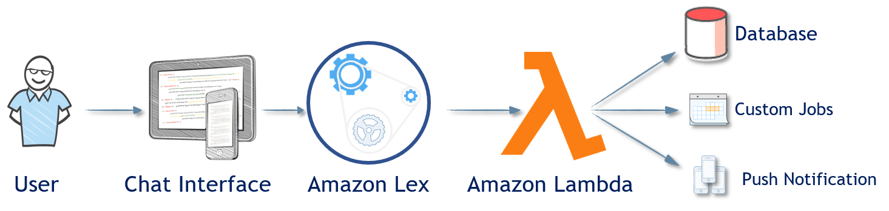
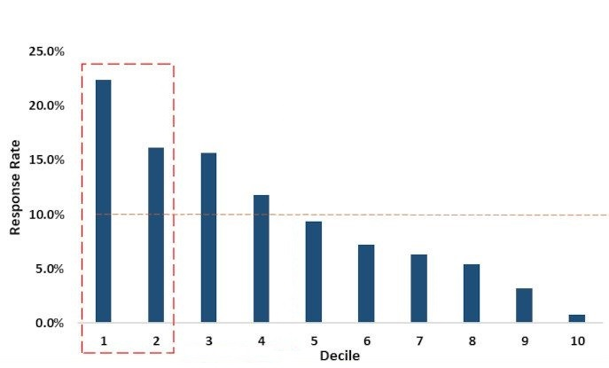
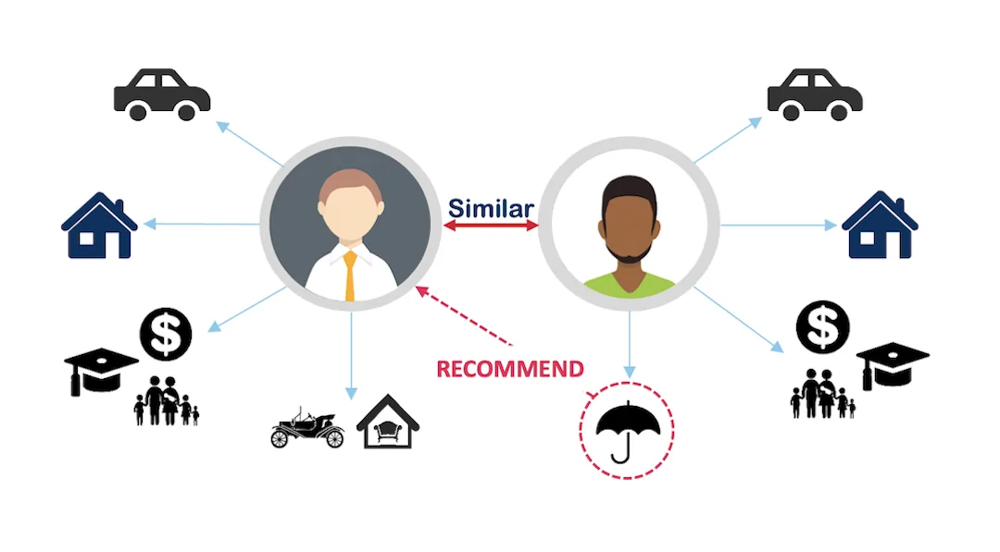
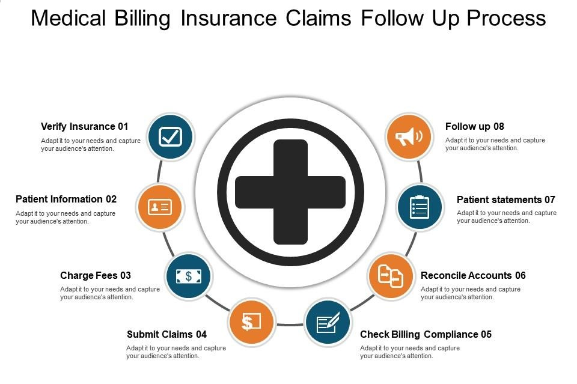

Rishi Sharma
👉 rishisharma2628@gmail.com 👉 +91 8860551924
Machine Learning Engineer, MLOps Consultant at Deloitte USI with experience in predictive modeling using a variety of supervised & unsupervised methodologies. I have a strong background in Natural Language Processing and Computer Vision and have experience working with Python, TensorFlow, Flask, Django, SQL, Pyspark, Docker, Kubernetes and AWS.
Skills & Qualifications
- ✔️ 5+ Years of experience in building, deploying and maintaining ML models.
- ✔️ Knowledge of programming languages such as Python, SQL, Pyspark
- ✔️ Experience with deep learning frameworks such as TensorFlow and Keras.
- ✔️ Understanding of CI/CD pipelines and Agile methodologies.
- ✔️ Extensive knowledge in API development using Flask and Django
- ✔️ Managed the deployment scaling, and maintenance of multiple applications using Docker containers and Kubernetes
Tech stack
Work History
03/2022 - 12/2022
Designing & implementing the flow for the chatbot including providing the utterances for training, creating the intent slots & managing edge cases
- Designing & implementing the flow for the chatbot including providing the utterances for training, creating the intent slots & managing edge cases
- Training a recommendation system to suggest menu items to customers for faster order processing and better user experience
- Using REST APIs to perform CRUD operations utilizing Django, Flask, Postgres and python.
04/2021 - 03/2022
Preforming Market Segmentation to target specific consumers with higher credit card acceptance, in order to reduce customer acquisition cost.
- Analysing data of customers with no credit history, such as rolling average account balance, number of weekly transactions, items purchased, etc
- Creating a probabilistic model to estimate their probability to default & creating decile & lift charts to shortlist the people in top 2 deciles
01/2020 - 03/2021
Building Machine Learning models for health care providers to shortlist customers for better sales & lower customer acquisition cost.
- Analysing RX and Medical claims history of members, from hive database along with other related details like Demographics, Online activity, AWV and other factors that could aid in the improvement of acceptance rate.
- Creating the Model based on the above user data. Recommendation from model led to 4% volume uplift. Received recognition from client’s end.
03/2019 - 01/2020
Making use of machine learning models to perform multi-class classification for the user submitted insurance claims
- Making use of OpenCV and Tesseract to segment image documents and extract doctor's notes and CPT codes
- Generating word embeddings using NLP models such as transformers, glove, Word2Vec, GPT and BERT.
- Integrating the model in production pipeline over AWS. Cutting down operational cost by $ 100K dollars across 3 claim centres
09/2017 - 02/2019

Made use of an ensemble of machine learning models to perform classification on credit defaulters with no loan history.
- Making use of user specific data such as age, income, occupation, collateral, etc. to predict metrics such as PD, LGD and EAD for each user.
- Modelling led to a reduction in default rate by 6% saving a total of potential $50K for client across 7 bank branches.